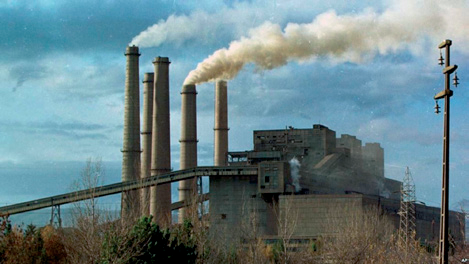
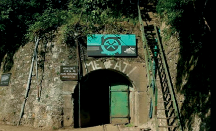

Resurset dhe trashëgimia e vendit tim
Shfrytëzimi i pasurive natyrore
Situata 1.
Buna: Përshëndetje, Rita! Më duhet të shkruaj një artikull informues për shfrytëzimin e pasurive natyrore në Kosovë dhe nuk kam asnjë ide se çfarë do të shkruaj. A mund të më ndihmosh me ndonjë informacion?
Rita: Sigurisht. Atëherë, fillimisht duhet të përmendet që Kosova ka pasuri natyrore të bollshme. Ka pyje, lumenj, male, tokë bujqësore dhe shumë pasuri nëntokësore. Kosova për nga pasuritë natyrore është ndër vendet më të pasura në Evropë. Pasuritë natyrore ndahen në:
| Pasuri mbitokësore | Pasuri nëntokësore |
|---|---|
1. Toka e punueshme, e cila shfrytëzohet për zhvillimin e bujqësisë. 2. Lumenjtë, të cilët i shfrytëzojmë për ujë të pijshëm apo ujitje. 3. Liqenet artificiale, të cilat shfrytëzohen për ujë të pijshëm. 4. Pyjet, drurët e të cilave shfrytëzohen për ngrohje apo për prodhimin e gjësendeve të ndryshme. Po ashtu, ato janë të rëndësishme për llojllojshmërinë e bimëve. 5. Kosova është e pasur me lloje të ndryshme bimore. | 1. Thëngjilli linjit, i cili shfrytëzohet për prodhimin e energjisë elektrike në Termocentralin “Kosova”. 2. Ka shumë minerale e më së shumti plumb, i cili nxirret nga minierat e Trepçës në Mitrovicë. 3. Xehe të shumta. |


Buna: Uaaa, nuk e kam ditur që vendi ynë ka kaq shumë pasuri natyrore. Faleminderit, Rita! Besoj që me këto informacione artikulli im do të informojë shumë njerëz për pasuritë tona natyrore!